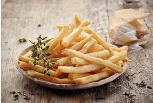

Papas fritas
Receta de papas fritas caseras

Ingredientes
3 o 4 papas (300gr)
Aceite
Sal
Elaboración (pasos)
Pelar las papas
Cortarlas en baston
Calentar aceite en una sarten
Cocinar hasta que esten doradas
Removerlas del acite y salar al gusto